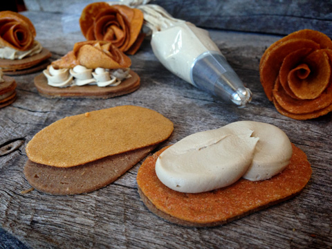
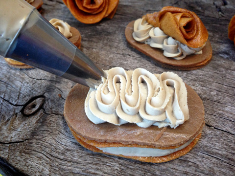

Peach Filled Butter Walnut Crusted Pastry with Espresso Buttercream Filling

This might seem like a crazy mash-up recipe, but it was inspired when I opened my fridge and found all these wonderful odds and ends. Even if you never try making the components that I used to create this, maybe it will inspire you to come up with your own creations based on what you have floating around your fridge. :)
One thing that I really loved about this recipe is that it gives you a mouthful of many different textures. Between the creamy frosting, the chewy fruit leather and the soft butter crust… well let’s just say that one bite is like a party in the mouth!
Ingredients:
Recipes used:
Preparation:
- Use a cookie cutter to cut out the shape you desire with the fruit leather and Butter Top Crust.
- Place the frosting in a piping bag and pipe it in between the layer, based on how you stack them.
- Decorate the tops with walnuts or if you are adventurous, make some fruit leather flowers! Enjoy.


© AmieSue.com